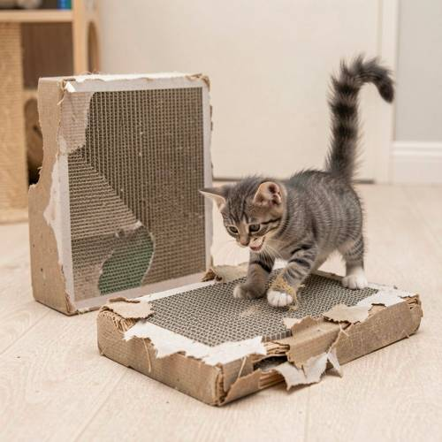
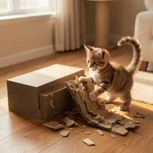

Relationship — There are two cat scratching boards in the picture, one is brand new a
There are two cat scratching boards in the picture, one is brand new and the other is dilapidated. A kitten is scratching the latter excitedly, its tail cocked high.

Direct — one call, no iterationContinuum — Kimi K3 + FLUX.2-klein-9B
Judge — Direct
FAILRelationship - Comparison — There are two cardboard cat scratching boards in the image. The one in the foreground is heavily used and torn, appearing dilapidated. The one in the background is also visibly used, with torn cardboard on its sides. Neither of the scratching boards appears to be 'brand new'.
PASSAction - Animal — A small, grey tabby kitten is on one of the scratching boards. Its front paws are on the board, and there are pieces of shredded cardboard around its paws, indicating a scratching action. The kitten's tail is held high and curved, matching the description 'cocked high'.
PASSGrammar - Pronoun Reference — The prompt specifies the kitten is scratching 'the latter', referring to the dilapidated scratching board. The image shows the kitten on the more dilapidated of the two boards, correctly depicting the action described by the pronoun reference.
Judge — Continuum
PASSRelationship - Comparison — The image displays two cardboard cat scratching boards. One is a large, rectangular, and pristine block, appearing brand new. The other is a smaller, flat piece of cardboard that is heavily torn, shredded, and frayed, clearly in a dilapidated state.
PASSAction - Animal — A small, striped kitten is shown with its front paws on the dilapidated scratching board, actively scratching it. The kitten's tail is raised high and curved over its back.
PASSGrammar - Pronoun Reference — The prompt specifies the kitten is scratching 'the latter' of two boards (one new, one dilapidated). The image shows the kitten scratching the dilapidated board, correctly interpreting the pronoun reference.
What the agent did
Thinking
The user wants an image: two cat scratching boards, one brand new, one dilapidated. A kitten scratching the dilapidated one excitedly, tail cocked high. Use flux2-klein.
Step 1 — `generate_image`
{
"model": "flux2-klein",
"prompt": "A cozy indoor scene with two corrugated cardboard cat scratching boards side by side on a wooden floor: one is brand new, pristine and intact with clean sharp edges, and the other is old and dilapidated, shredded and frayed with bits of torn cardboard scattered around it. A small playful kitten is excitedly scratching the dilapidated board with its front paws, tail held high and curled upward. Soft warm daylight from a window, photorealistic."
}
Result img_0

Thinking
The image looks great: two scratching boards, one pristine, one shredded; kitten scratching the dilapidated one with tail high. The kitten's mouth is open — excited. This matches the prompt well. Mark best and stop.
Model
The image came out well on the first try: a pristine, brand-new corrugated scratching board sits next to a thoroughly shredded one, and a tabby kitten is eagerly clawing at the dilapidated board with its tail held high and curled — exactly as requested.
Step 2 — `mark_best`
{
"image": "img_0",
"reason": "All requested elements present and correct: two scratching boards (one new, one dilapidated), kitten excitedly scratching the old one with tail cocked high."
}
Model
The image is complete and matches your description: - **Two scratching boards** side by side on a wooden floor - **One brand new** — clean, intact corrugated cardboard with crisp edges - **One dilapidated** — shredded and frayed, with torn cardboard bits scattered around - **A kitten** excitedly scratching the worn board, mouth open in enthusiasm, **tail cocked high** and curled Warm window light ties the cozy scene together. No further edits needed!